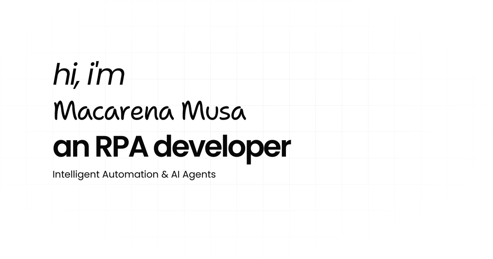
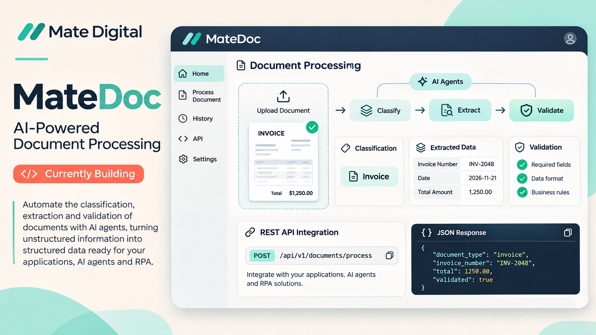

Robotic Process Automation
Automatización de procesos empresariales.
- Blue Prism
- Power Automate
- Automation Anywhere
- Rocketbot

Soy RPA Developer con experiencia en el diseño, desarrollo e implementación de soluciones de automatización empresarial, con un enfoque orientado a la optimización de procesos y la mejora continua.
Mi perfil combina automatización inteligente, desarrollo de software, inteligencia artificial y agentes de IA, integrando diferentes tecnologías para construir soluciones eficientes, escalables y adaptadas a las necesidades del negocio.
Me apasiona la tecnología y me motiva descubrir nuevas formas de resolver problemas, simplificar el trabajo de las personas y transformar procesos complejos en soluciones más simples e inteligentes.
La curiosidad y el aprendizaje continuo son parte de mi desarrollo profesional. Disfruto explorando nuevas tecnologías, enfrentando desafíos y encontrando oportunidades para innovar y generar un impacto real.
Automatización de procesos empresariales.
Flujos, modelos y agentes para automatización inteligente.
Componentes, aplicaciones e interfaces.
Almacenamiento y consulta de datos.
Comunicación entre aplicaciones y servicios.
from idea to execution
Análisis de procesos, identificación de oportunidades de automatización, relevamiento de requerimientos y evaluación de viabilidad.
Diseño de soluciones, definición de arquitectura, lógica de negocio y documentación funcional y técnica.
Desarrollo de soluciones escalables, integración de sistemas y creación de componentes reutilizables.
Pruebas funcionales y técnicas, gestión de excepciones, validación de resultados y control de calidad.
Implementación en entornos productivos, monitoreo y gestión de incidencias.
Optimización del rendimiento, evolución de soluciones y mejora continua de los procesos.
always learning
SS&C Blue Prism
SS&C Blue Prism
SS&C Blue Prism
SS&C Blue Prism University
Automation Anywhere
Junio 2025 – Actualidad · Madrid, España
Septiembre 2022 – Junio 2025 · Chile
Febrero 2022 – Septiembre 2022
Febrero 2019 – Diciembre 2021 · Córdoba, Argentina
In Development
AI-Powered Document Processing
MateDoc es una plataforma de procesamiento inteligente de documentos mediante agentes de inteligencia artificial, modelos multimodales e integraciones a través de APIs REST.
Su objetivo es automatizar la clasificación, extracción y validación de información documental, transformándola en datos estructurados que puedan ser consumidos por otras aplicaciones, agentes de IA y soluciones RPA.

Macarena Musa.
RPA Developer | Intelligent Automation & AI Agents
¿Tenés un proyecto, una idea o un desafío? Me encantaría conocerlo.